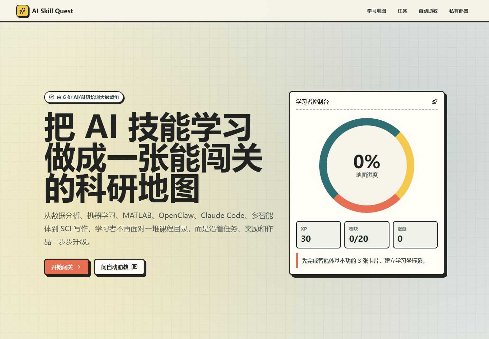

AI Learning Platform
AI Skill Quest 技能学习平台
把 AI / 科研工具学习做成一张可执行的任务地图，让学习者沿着任务、奖励、自动助教和作品路径逐步升级。

展示重点
这个项目补充了 AI4Semi 之外的教育产品能力：如何把数据分析、机器学习、MATLAB、OpenClaw、Claude Code、多智能体与 SCI 写作等技能组织成可学习、可反馈、可部署的训练路径。
AI Learning Platform
把 AI / 科研工具学习做成一张可执行的任务地图，让学习者沿着任务、奖励、自动助教和作品路径逐步升级。

这个项目补充了 AI4Semi 之外的教育产品能力：如何把数据分析、机器学习、MATLAB、OpenClaw、Claude Code、多智能体与 SCI 写作等技能组织成可学习、可反馈、可部署的训练路径。